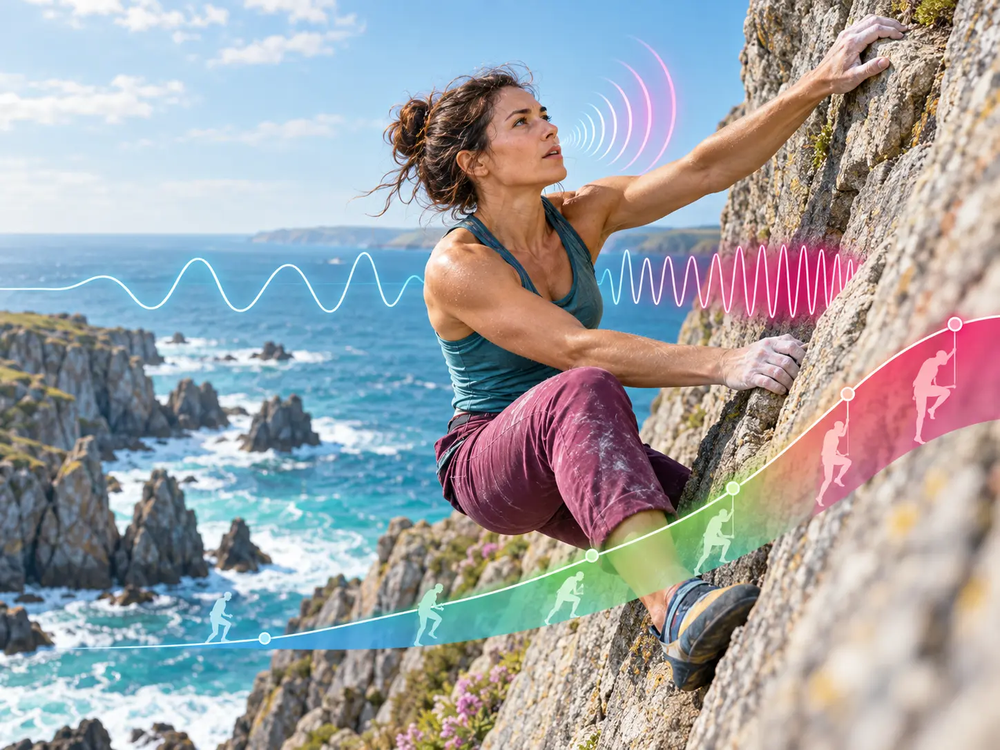

Breathing Rate · BR
Complete inhale–exhale cycles per minute. Pranaclimb normally counts the exhale because it is often easier to hear.
How fast a climber breathes is one of the clearest field signals of how hard the climbing feels. Breathing rate changes rapidly with effort, but its real value appears when it is read alongside perceived exertion, movement and recovery.
Originally published 17 September 2021 · Scientifically revised September 2026
By Annie Anderson, Founder & Director of Pranaclimb · Love, Breathe, Climb

Respiratory frequency (fR), called breathing rate (BR) within Pranaclimb, is the number of complete breathing cycles per minute. Rating of perceived exertion (RPE) is the climber’s conscious judgement of how hard the effort feels, usually scored from 0 to 10.
Across continuous and intermittent exercise, respiratory frequency closely follows the time course of perceived exertion. It also responds rapidly when high-intensity workload changes. That combination makes BR unusually useful for climbing, where effort rises and falls from move to move rather than remaining steady.
Complete inhale–exhale cycles per minute. Pranaclimb normally counts the exhale because it is often easier to hear.
The climber’s 0–10 judgement of effort, fatigue and discomfort at that moment.
How rapidly BR and heart rate fall after the effort, interpreted alongside how the climber feels and moves.
Respiratory frequency is strongly associated with perceived exertion across varied exercise conditions and is a valuable measure for training monitoring.
Paraphrased from Nicolò, Massaroni & Passfield, 2017This does not mean BR measures every part of climbing physiology. It does mean that a microphone, video or wearable can capture a meaningful field signal that changes quickly as the climber approaches a limit.
Breathing rate and perceived effort often rise together because both respond rapidly to the intensity of the task and the motor drive required to continue it. The relationship is not a simple one-way rule in which fast breathing causes high RPE or slow breathing guarantees ease. It is an integrated response involving central motor command, respiratory sensations, working-muscle feedback, blood-gas chemistry, emotion and attention.
As exercise intensity rises, carbon-dioxide production, acidity and ventilatory demand increase. Chemoreceptor input and the growing work of breathing contribute to the sensation of breathlessness. A climber who is comfortable with respiratory discomfort may remain composed for longer, but CO₂-tolerance practice does not remove the need to ventilate or make a maximal effort metabolically easy.
Breathing is physical work. During hard climbing, the diaphragm and other respiratory muscles must ventilate while also contributing to trunk pressure and postural control. Sensory feedback from the respiratory system can intensify breathlessness and discomfort, while high respiratory-muscle work can compete with locomotor muscles for blood flow. This is one reason that BR, breathing expression and RPE are most informative when read together.
A repeatable breathing rhythm can give attention somewhere useful to settle: the exhale, the movement or the next hold. This may reduce unnecessary cognitive noise without pretending that breath control erases physiological strain. Experimental work also shows that mental fatigue can shorten exercise tolerance by making the same physical output feel harder, even when cardiorespiratory and muscular responses are broadly similar.
The coaching distinction: lower BR often accompanies lower RPE, but deliberately suppressing BR during a hard crux may increase air hunger. Below CP, nasal or controlled breathing can support pacing when it meets the ventilatory demand. Near and above CP, the goal is effective ventilation, well-timed bracing and rapid recovery—not artificially slow breathing.
Pranaclimb uses the following values as working field anchors. They organise an individual assessment; they are not universal laboratory thresholds and should be refined from the climber’s own repeated data.
Individualise the number: route angle, fear, heat, breath holds, vocalisation, pacing and measurement method can all alter BR. Pranaclimb therefore combines BR with RPE, movement context and recovery rather than treating one number as a verdict.
In 2018, an iROZHLAS data-journalism project used smart shirts, pulse and respiratory monitoring, motion capture and video while Adam Ondra and Štěpán Stráník climbed the same indoor 8b route. The route was well below Ondra’s maximum grade but represented a much greater relative challenge for Stráník.
This was a two-climber demonstration, not a controlled scientific trial. It is nevertheless a useful field comparison because the external task was the same while the athletes’ relative capacities, movement strategies and completion times differed.
Archived Pranaclimb analysis of the Hexoskin display
| Climber | BR | V̇E | Estimated VT | Pranaclimb interpretation |
|---|---|---|---|---|
| Adam Ondra | 14 BPM | 35.03 L/min | ≈2.50 L | Low-frequency, deeper breathing consistent with a comparatively low internal demand.Below the Pranaclimb CP reference. |
| Štěpán Stráník | 36 BPM | 67.97 L/min | ≈1.89 L | Higher respiratory demand and a faster, shallower pattern than Ondra.Elevated effort, but not automatically above CP. |
Estimated tidal volume (VT) = minute ventilation (V̇E) ÷ breathing rate (BR)The tidal-volume values are Pranaclimb calculations derived from the displayed BR and V̇E values. They should be read as estimates, not direct breath-by-breath spirometry.
The same route can impose very different internal demands. Ondra completed it faster with lower recorded BR, while Stráník spent longer on the wall and showed a greater respiratory response toward the finish.
That one breathing pattern alone caused the performance difference, that 36 BPM equals CP for every climber, or that BR by itself separates physical effort from emotion.
The iROZHLAS report also described very low on-wall heart-rate and respiration values for Ondra, followed by sharp increases immediately after he finished. This highlights a climbing-specific challenge: bracing, breath holding, static upper-body work and measurement averaging can conceal internal work while the climber is still moving.
Tidal volume (VT) is the volume of one breath. Minute ventilation (V̇E) is the total volume moved each minute. V̇E is determined by both breath depth and breath rate.
During progressive exercise, tidal volume usually rises before eventually approaching a plateau; further increases in ventilation then depend more heavily on respiratory frequency. Research on high-intensity interval exercise also shows that fR follows perceived exertion more closely than VT. The two variables are therefore complementary, not competitors.
At the same minute ventilation, a very rapid and shallow pattern directs a larger proportion of each breath into anatomical dead space. But “deep and slow” is not always the answer: near maximal effort, faster breathing is an appropriate part of meeting ventilatory demand. The practical goal is breathing that matches the work without becoming unnecessarily chaotic.
Breathing rate responds to physical effort, but climbing also adds exposure, uncertainty, commitment and fear. A rapid rise in BR may reflect muscular demand, emotional arousal or both. Conversely, a climber may appear to breathe slowly because repeated breath holds are hiding the true respiratory disturbance.
This is why Pranaclimb does not interpret BR in isolation. We ask:
Raw BR is the directly counted breathing frequency. Effective BR is Pranaclimb’s field interpretation after documented breath holds and expressive breathing acts are considered. The correction prevents silent holds or forceful vocalisations from being mistaken for low effort.
A climbing attempt does not end when the hands leave the wall. Breathing, circulation and metabolism continue responding while the climber rests. Pranaclimb therefore reads the effort and the recovery as one continuous event.
How rapidly breathing falls from the final climbing intensity, whether rhythm returns, and whether breath holds, gasps or sighs continue into the rest.
The fall in heart rate from the end-of-effort value to the value recorded 60 seconds later. It adds a standardised cardiovascular recovery marker.
Oxygen consumption remaining above the pre-exercise baseline after the climb. It describes metabolic recovery but cannot be measured directly from HR or BR alone.
HRR₆₀ = end-of-effort HR − HR after 60 seconds. The early fall in heart rate reflects rapid autonomic adjustment, including parasympathetic reactivation, alongside withdrawal of exercise-related drive. The value is also affected by the preceding intensity, active versus passive recovery, posture, temperature, hydration, medication and measurement timing.
Pranaclimb currently uses the following coaching bands: a drop of 30 BPM or more is strong, 20–29 BPM is moderate, and less than 20 BPM indicates limited recovery in that assessment. These are field interpretation bands—not diagnostic or universal clinical cut-offs—and they become most useful when the same climber repeats the same protocol.
Excess post-exercise oxygen consumption (EPOC) is the oxygen used above resting baseline after exercise. It supports the restoration of phosphocreatine and oxygen stores and accompanies the return of ventilation, circulation, temperature and hormonal activity towards baseline. Its magnitude and duration rise with the intensity and duration of the preceding work.
This is directly relevant to climbing. Repeated isometric forearm contractions and high-intensity movement draw on anaerobic energy, but restoration between attempts depends heavily on oxidative metabolism. Climbing research has shown that oxygen consumption can remain elevated into the post-climb recovery period.
Record resting BR and readiness. Notice whether breathing is quiet and controlled or already elevated by anticipation.
Count complete breathing cycles, timestamp holds and expressive breaths, and pair the observation with movement, terrain and RPE.
Record terminal HR and BR, then measure HRR₆₀ and breathing recovery using the same posture and recovery protocol each time. The speed and quality of recovery help distinguish a hard but well-managed effort from one that has overwhelmed the climber’s current capacity.
The assessment identifies what the climber needs. The Pranaclimb practice library then turns that information into a targeted intervention: pacing below CP, breathing under load, emotional regulation or recovery between attempts.
Wearable respiratory garments can measure BR, V̇E and HR during climbing, and later climbing research has shown how sensor data can be synchronised with video and route position. However, climbing motion, garment fit, breath holds and averaging windows can affect the signal.
Pranaclimb’s audio-first approach is designed for the crag: the recorded breath remains the primary observation, while RPE, video, heart-rate recovery and optional wearables add context. This does not replace laboratory gas analysis. It creates a repeatable method for learning from real climbing.
The Pranaclimb Remote Breathing Assessment combines Raw BR, Effective BR, RPE and HRR₆₀ to reveal effort, respiratory behaviour and recovery on real climbing—while EPOC provides the physiological context for the work that continues after the climb.
Explore the RBA → Read the Methodology →Complete the required participant form before your Pranaclimb climbing session.
Complete Waiver →Outdoor climbing: Anyone under 18 must be accompanied by their parent or legally appointed guardian for the entire session.